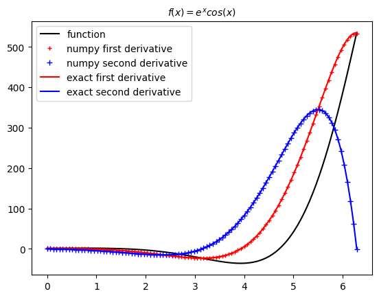

Lab Assignment 3¶
Lauren Illa¶
Due by Friday April 24 at 11 am. Submit on Canvas as instructed by the TA.¶
Collaboration is allowed but each student submits their own solution.¶
Write a Jupyter notebook with a solution to the following problems. It’s fine to work in groups, but each student should write the solution notebook independently.
[ ]:
import numpy as np
import scipy as sp
import matplotlib.pyplot as plt
Problem 1¶
Use the derivative and second_derivative functions we wrote in class to compute the first and second derivatives of the function
Compute the derivatives of \(f(x)\) by hand. Plot the formulas for \(f'(x)\) and \(f''(x)\) and compare to the numerical results in the interval \(0 < x < 2\pi\). Comment briefly on the choice of step size and on the numerical error.
[22]:
def derivative(f,a,method,h):
'''Compute the difference formula for f'(x) with step size h.
Parameters
----------
f : function
Array function of one variable
a : number
Compute derivative at x = a
method : string
Difference formula: 'forward', 'backward' or 'central'
h : number
Step size in difference formula. The default is h=0.01
Returns
-------
float
Difference formula at x=a:
central: f(a+h) - f(a-h))/2h
forward: f(a+h) - f(a))/h
backward: f(a) - f(a-h))/h
'''
if method == 'central':
return (f(a + h) - f(a - h))/(2*h)
elif method == 'forward':
return (f(a + h) - f(a))/h
elif method == 'backward':
return (f(a) - f(a - h))/h
else:
raise ValueError("Method must be 'central', 'forward' or 'backward'.")
def second_derivative(f,a,h):
return (f(a+h) + f(a-h) - 2*f(a))/h**2
[23]:
x = np.linspace(0,2*np.pi,100)
h = 0.1
def function(x):
return np.exp(x) * np.cos(x)
d1_exact = np.exp(x) * (-np.sin(x)) + np.exp(x) * np.cos(x)
d2_exact = -2 * np.exp(x) * np.sin(x)
plt.plot(x,function(x), 'k-', label='function')
plt.plot(x,derivative(function, x, 'central', h),'r+', ms=4, label='numpy first derivative')
plt.plot(x,second_derivative(function, x, h),'b+',label='numpy second derivative')
plt.plot(x,d1_exact,'r-',label='exact first derivative')
plt.plot(x,d2_exact,'b-',label='exact second derivative')
plt.title(r'$f(x) = e^{x}cos(x)$', fontsize=10)
plt.legend(loc='best',fontsize=10)
plt.show()

I used the central difference thoerem to compute the first and second derivatives. This method is more accurate than the forward or backward methods, which have errors on the order of \(\mathcal{O}(h)\), since first-order accurate methods have increasing errors when the curvature of the function is great. This error can be mitigated by reducing \(h\). However, reducing \(h\) too much results in loss of precision due to round-off errors. Instead, I used the central difference method because it is a second-order accurate method (\(\mathcal{O}(h^2)\)) that allows the use of a larger value of \(h\), which reduces computational costs without losing accuracy. The leading error term is \(\frac{f'''(x)}{6}h^2\), so of order 2. Since the function is smooth in the interval, the third derivative is much less than the first derivative such that the leading error is very small in general.
Problem 2¶
Here are two integrals that quadrature methods may find challenging:
Evaluate these integrals using at least two different quadrature methods, chosen among the midpoint, trapezoid and Simpson rules. Compare the answers and explain why the computer may have trouble with these integrals.
Improve the calculation of the integrals with the Monte Carlo method, using importance sampling with the von Neumann rejection method (discussed, among other places, in chapter 5 of Landau’s book).
[20]:
# Midpoint method
N = 100
a = 0
b = 2*np.pi
h = (b - a)/N # h=0.01
x = np.linspace(a,b,N+1)
x_mid = (x[1:] + x[:N]) / 2.0
y1_mid = np.sin(100*x_mid)
mid1_int = np.sum(y1_mid)*h # integral
print('I_1 midpoint result = ', mid1_int)
# exact result, error
exact_1 = 0 # evaluated using mathematica
print('I_1 exact result = ', exact_1)
mid1_error = abs(mid1_int - exact_1)
print ('I_1 error = ', mid1_error)
y2_mid = abs(np.sin(100*x_mid))**(x_mid)
mid2_int = np.sum(y2_mid)*h
print('I_2 midpoint result = ', mid2_int)
# exact result, error
exact_2 = 2.96756
print('I_2 exact result = ', exact_2)
mid2_error = abs(mid2_int - exact_2)
print ('I_2 error = ', mid2_error)
I_1 midpoint result = -9.764191778744848e-14
I_1 exact result = 0
I_1 error = 9.764191778744848e-14
I_2 midpoint result = 0.02299143829719014
I_2 exact result = 2.96756
I_2 error = 2.94456856170281
[ ]:
# Trapezoid method
N = 100
a = 0
b = 2 * np.pi
h = (b - a)/N
x = np.linspace(a,b,N+1)
# integrand
y1 = np.sin(100*x)
# Integral
trap1_int = (y1[0] + y1[N])*h / 2.0
# and from the other points
trap1_int += np.sum(y1[1:N])*h
print ('trapezoid result = ', trap1_int)
# exact result, error (test as a function of N)
exact_1 = 0
print ('exact result = ', exact_1)
trap1_error = abs(trap1_int - exact_1)
print ('error = ', trap1_error)
y2 = abs(np.sin(100*x))**x
# Integral
trap2_int = (y2[0] + y2[N])*h / 2.0
# and from the other points
trap2_int += np.sum(y2[1:N])*h
print ('trapezoid result = ', trap2_int)
# exact result, error (test as a function of N)
exact_2 = 2.96756
print ('exact result = ', exact_2)
trap2_error = abs(trap2_int - exact_2)
print ('error = ', trap2_error)
trapezoid result = 8.550413541437844e-14
exact result = 0
error = 8.550413541437844e-14
trapezoid result = 0.03934128899578663
exact result = 2.96756
error = 2.9282187110042135
[ ]:
# Simpson's rule
a = 0.0
b = 2 * np.pi
N = 101 # an odd number of points
h = (b - a)/(N-1) # an even number of intervals of length h
x = np.linspace(a,b,N)
# weights
wend = h / 3.0
weven = 4.0 * h / 3.0
wodd = 2.0 * h / 3.0
y1 = np.sin(100*x)
# Integral - contributions from:
# endpoints
sim1_int = (y1[0] + y1[N-1]) * wend
# even points (no endpoints)
sim1_int += np.sum(y1[1:N:2]) * weven
# odd points (no endpoints)
sim1_int += np.sum(y1[2:N-1:2]) * wodd
print ('I_1 Simpson result = ', sim1_int)
# exact result, error (test as a function of N)
exact = 0
print ('I-1 exact result = ', exact)
sim1_error = abs(sim1_int - exact)
print ('I_1 error = ',sim1_error)
y2 = abs(np.sin(100*x))**x
# Integral - contributions from:
# endpoints
sim2_int = (y2[0] + y2[N-1]) * wend
# even points (no endpoints)
sim2_int += np.sum(y2[1:N:2]) * weven
# odd points (no endpoints)
sim2_int += np.sum(y2[2:N-1:2]) * wodd
print ('I_1 Simpson result = ', sim2_int)
# exact result, error
exact = 2.96756 # I used mathematica to find this
print ('I-1 exact result = ', exact)
sim2_error = abs(sim2_int - exact)
print ('I_1 error = ', sim2_error)
I_1 Simpson result = 8.61552042006734e-14
I-1 exact result = 0
I_1 error = 8.61552042006734e-14
I_1 Simpson result = 0.030938484123546283
I-1 exact result = 2.96756
I_1 error = 2.9366215158764537
For the midpoint, trapezoidal, and Simposon’s rules, the error between the numerical integral and the exact integral for \(I_1\) was on the order of \(10^{-14}\). For \(I_2\) using the same quadrature methods, the error was much greater (on the order of \(10^0\)). The error is much smaller for \(I_1\) than for \(I_2\) due to the higly oscillatory nature of the integrand of \(I_2\). The origin symmetry of \(I_1\) and the less oscillatory nature of the function within the period results in the area being computationally less expensive to compute. Conversely, the exponential function \(I_2\) has higly oscillatory behavior. This makes using quadrature methods difficult since the number of points required to accurately calculate the integral is greater than the number of oscillations.
[24]:
def montecarlo(f, a, b, N):
h = (b - a) / N
# array of N random points in (a,b)
# generate N uniformly distributed random points between (a,b)
R = np.random.random(N)*(b - a) + a
return np.sum(f(R))*h
[45]:
def f_1(x):
return np.sin(100*x)
mc_int_1 = montecarlo(f_1,0.0,2*np.pi,100)
print ('I_1 Monte Carlo result = ', mc_int_1)
exact_1 = 0
mc_error_1 = abs(mc_int_1 - exact_1)
print ('error = ', mc_error_1)
def f_2(x):
return abs(np.sin(100*x))**x
mc_int_2 = montecarlo(f_2,0.0,2*np.pi,100)
print ('I_2 Monte Carlo result = ', mc_int_2)
exact_2 = 2.96756
mc_error_2 = abs(mc_int_2 - exact_2)
print ('error = ', mc_error_2)
I_1 Monte Carlo result = -0.2730458813581178
error = 0.2730458813581178
I_2 Monte Carlo result = 2.9323608439486284
error = 0.035199156051371805
[46]:
def montecarlo_rejection(f, a, b, N):
# define amplitudes of the sin function
y_min = -1
y_max = 1
x = np.random.uniform(a, b, N)
y = np.random.uniform(y_min, y_max, N)
below_positive = (y > 0) & (y < f(x))
above_negative = (y < 0) & (y > f(x))
# points inside the boundary
inside_count = np.sum(below_positive) - np.sum(above_negative)
integral = (inside_count / N) * (b - a) * (y_max - y_min)
return integral
[48]:
mc_rej_1 = montecarlo_rejection(f_1, 0, 2*np.pi, 10000)
print ('I_1 von Neumann rejection result = ', mc_rej_1)
exact_rej_1 = 0
mc_error_rej_1 = abs(mc_rej_1 - exact_rej_1)
print ('error = ', mc_error_rej_1)
mc_rej_2 = montecarlo_rejection(f_2, 0, 2*np.pi, 10000)
print ('I_2 von Neumann rejection result = ', mc_rej_2)
exact_rej_2 = 2.96756
mc_error_rej_2 = abs(mc_rej_2 - exact_rej_2)
print ('error = ', mc_error_rej_2)
I_1 von Neumann rejection result = 0.04146902302738527
error = 0.04146902302738527
I_2 von Neumann rejection result = 3.0008493027089704
error = 0.033289302708970236
Problem 3¶
Problem 5.12 on page 181 in Newman’s book. Solve points b) and c); you do not need to derive the expression in a).
[ ]:
# Part b
# I used Simpson's rule for this problem
# Since this decays exponentially, b does not have to be particularly large
k_b = 1.381e-23
h_bar = 1.055e-34
c = 2.998e8
T = 300 # some random temp
a = 0.0
b = 50
N = 101
h = (b - a)/(N-1)
x = np.linspace(a, b, N)
# weights
wend = h / 3.0
weven = 4.0 * h / 3.0
wodd = 2.0 * h / 3.0
y_W = ((k_b**4 * T**4) / (4 * (np.pi**2) * c**2 * h_bar**3)) * (x**3) / (np.exp(x) - 1)
# avoid error with dividing by zero
y_W[0] = 0.0
sim_W_int = (y_W[0] + y_W[N-1]) * wend
sim_W_int += np.sum(y_W[1:N:2]) * weven
sim_W_int += np.sum(y_W[2:N-1:2]) * wodd
print('W Simpson result = ', sim_W_int)
# exact
exact_W = (k_b**4 * T**4) / (4 * (np.pi**2) * c**2 * h_bar**3) * (np.pi**4) / 15
print('W exact result = ', exact_W)
sim_W_error = abs(sim_W_int - exact_W)
print('W error = ', sim_W_error)
W Simpson result = 459.2585498058471
W exact result = 459.18489380629364
W error = 0.07365599955346624
/var/folders/x8/8mm05yln7q3249x7lbbtzj5w0000gn/T/ipykernel_34791/2740840340.py:21: RuntimeWarning: invalid value encountered in divide
y_W = ((k_b**4 * T**4) / (4 * (np.pi**2) * c**2 * h_bar**3)) * (x**3) / (np.exp(x) - 1)
[54]:
# Part b
simp_W = 459.2585498058471
sigma = simp_W / (T**4)
print('The Stefan-Boltzmann constant is approximately', sigma, 'W * m^(-2) * K^(-4)')
The Stefan-Boltzmann constant is approximately 5.669858639578359e-08 W * m^(-2) * K^(-4)
Problem 4¶
Sphinx is an excellent tool to document code. Although it is not strictly required that you document your code using Sphinx, you are encouraged to read this tutorial on Sphinx and give it a try.
Problem 5¶
Discuss a possible midterm project with 2-3 other classmates. If you can form a group of 3-4 people working on a topic, email the Instructor and TA with a brief (1-2 line) description of the proposed project, and the names of the students who will be working on it.
Group: Lauren Illa, Amari Butler, Amelyn Phang, Serena Bragadini (may change)
Potential project: We discussed using discrete Fourier transforms to analyze spectroscopical data or digital signals, but we have not decided on a project.